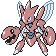

#212 SCIZOR

TYPE:
BUG / STEEL
Pokédex Description
Pokémon Gold / Silver:
Moves its pincers to scare the enemy. From the drawings of his body he appears to have 3 heads.
Pokémon Crystal:
The pincers it has have steel. With them, there is nothing that can resist you. They break everything they catch.
Base Stats
| Health | Attack | Defense | Speed | At. Esp. | Def. Esp. |
|---|---|---|---|---|---|
| 70 | 130 | 100 | 65 | 55 | 80 |
Max Stats Level 50
| Health | Attack | Defense | Speed | At. Esp. | Def. Esp. |
|---|---|---|---|---|---|
| 130 - 176 | 135 - 181 | 105 - 151 | 70 - 116 | 60 - 106 | 85 - 131 |
Max Stats Level 100
| Health | Attack | Defense | Speed | At. Esp. | Def. Esp. |
|---|---|---|---|---|---|
| 250 - 343 | 265 - 358 | 205 - 298 | 135 - 228 | 115 - 208 | 165 - 258 |
Movements by level
Level - Attack - Type - Power - Accuracy - PP - Description
1 - MALICIOUS NORMAL - 100 - 30 - Reduces enemy DEFENSE.
1 - AT. FAST NORMAL - 40 - 100 - 30 - Allows the user to hit first.
6 - NORMAL ENERGY FOCUS - 100 - 30 - Increased critical hit chance.
12 - SINIEST PERSECUTION - 40 - 100 - 20 - Hits the POKÉMON when it changes.
18 - NORMAL FALSE SWAT - 40 - 100 - 40 - Leave the enemy with at least 1 HP.
24 - PSYCHIC AGILITY - 100 - 30 - Increase your SPEED a lot.
30 - CLAW-METAL STEEL - 50 - 95 - 35 - It can increase your ATTACK.
36 - NORMAL KNIFE - 70 - 100 - 20 - Good critical hit chance.
42 - NORMAL SWORD DANCE - 100 - 30 - Dance that improves ATTACK.
48 - NORMAL DOUBLE TEAM - 100 - 15 - Improves evasion skill.
1 - AT. FAST NORMAL - 40 - 100 - 30 - Allows the user to hit first.
6 - NORMAL ENERGY FOCUS - 100 - 30 - Increased critical hit chance.
12 - SINIEST PERSECUTION - 40 - 100 - 20 - Hits the POKÉMON when it changes.
18 - NORMAL FALSE SWAT - 40 - 100 - 40 - Leave the enemy with at least 1 HP.
24 - PSYCHIC AGILITY - 100 - 30 - Increase your SPEED a lot.
30 - CLAW-METAL STEEL - 50 - 95 - 35 - It can increase your ATTACK.
36 - NORMAL KNIFE - 70 - 100 - 20 - Good critical hit chance.
42 - NORMAL SWORD DANCE - 100 - 30 - Dance that improves ATTACK.
48 - NORMAL DOUBLE TEAM - 100 - 15 - Improves evasion skill.
Movements by MT/MO
MT/MO - Attack - Type - Power - Accuracy - PP - Description
MT02 - NORMAL HEAD BLOW - 70 - 100 - 15 - It drives the enemy back.
MT03 - DAMN??? - 100 - 10 - It doesn't work the same with ghosts.
MT06 - TOXIC POISON - 85 - 10 - Poison that increases the damage.
MT08 - ROCK BLOW FIGHT - 20 - 100 - 15 - Attack that can lower DEFENSE.
MT10 - NORMAL HIDDEN POWER - - 100 - 15 - The power varies depending on the POKÉMON.
MT11 - SUNNY DAY FIRE - 90 - 5 - Improved fire attacks 5 turns.
MT13 - NORMAL SNORING - 40 - 100 - 15 - It is only used when you sleep.
MT15 - HYPER BEAM NORMAL - 150 - 90 - 5 - 1st turn: Attack 2nd turn: Rest.
MT17 - NORMAL PROTECTION - 100 - 10 - Thwart the attack. It can fail.
MT20 - NORMAL Stamina - 100 - 10 - Always leave 1 PS, at least.
MT21 - NORMAL FRUSTRATION - - 100 - 20 - Based on the lack of loyalty.
MT27 - NORMAL REVERSE - - 100 - 20 - Attack based on loyalty.
MT32 - DOUBLE NORMAL TEAM - 100 - 15 - Improves evasion skill.
MT34 - NORMAL WIG - 90 - 15 - Causes confusion and raises ATTACK.
MT35 - NORMAL SLEEPWALKER - 100 - 10 - Attack randomly while you sleep.
MT37 - TORM. ROCK SAND - 100 - 10 - Produces damage on all turns.
MT39 - NORMAL SPEED - 60 - 100 - 20 - Attack that never fails.
MT43 - FIGHT DETECTION - 100 - 5 - You can skip the attack that turn.
MT44 - PSYCHIC REST - 100 - 10 - Sleep 2 shifts for full cure.
MT45 - NORMAL ATTRACTION - 100 - 15 - Fall in love with the opposite gender.
MT46 - SINIEST THIEF - 40 - 100 - 10 - Attack that can steal an object.
MT47 - STEEL WING STEEL - 70 - 90 - 25 - Rigid wings that hit the rival.
MT49 - CORTEFURIA BUG - 10 - 95 - 20 - Successive hits give more power.
MO01 - NORMAL CUT - 50 - 95 - 30 - Cuts with claws, scythes, etc.
MO04 - NORMAL STRENGTH - 80 - 100 - 15 - Powerful physical attack.
MT03 - DAMN??? - 100 - 10 - It doesn't work the same with ghosts.
MT06 - TOXIC POISON - 85 - 10 - Poison that increases the damage.
MT08 - ROCK BLOW FIGHT - 20 - 100 - 15 - Attack that can lower DEFENSE.
MT10 - NORMAL HIDDEN POWER - - 100 - 15 - The power varies depending on the POKÉMON.
MT11 - SUNNY DAY FIRE - 90 - 5 - Improved fire attacks 5 turns.
MT13 - NORMAL SNORING - 40 - 100 - 15 - It is only used when you sleep.
MT15 - HYPER BEAM NORMAL - 150 - 90 - 5 - 1st turn: Attack 2nd turn: Rest.
MT17 - NORMAL PROTECTION - 100 - 10 - Thwart the attack. It can fail.
MT20 - NORMAL Stamina - 100 - 10 - Always leave 1 PS, at least.
MT21 - NORMAL FRUSTRATION - - 100 - 20 - Based on the lack of loyalty.
MT27 - NORMAL REVERSE - - 100 - 20 - Attack based on loyalty.
MT32 - DOUBLE NORMAL TEAM - 100 - 15 - Improves evasion skill.
MT34 - NORMAL WIG - 90 - 15 - Causes confusion and raises ATTACK.
MT35 - NORMAL SLEEPWALKER - 100 - 10 - Attack randomly while you sleep.
MT37 - TORM. ROCK SAND - 100 - 10 - Produces damage on all turns.
MT39 - NORMAL SPEED - 60 - 100 - 20 - Attack that never fails.
MT43 - FIGHT DETECTION - 100 - 5 - You can skip the attack that turn.
MT44 - PSYCHIC REST - 100 - 10 - Sleep 2 shifts for full cure.
MT45 - NORMAL ATTRACTION - 100 - 15 - Fall in love with the opposite gender.
MT46 - SINIEST THIEF - 40 - 100 - 10 - Attack that can steal an object.
MT47 - STEEL WING STEEL - 70 - 90 - 25 - Rigid wings that hit the rival.
MT49 - CORTEFURIA BUG - 10 - 95 - 20 - Successive hits give more power.
MO01 - NORMAL CUT - 50 - 95 - 30 - Cuts with claws, scythes, etc.
MO04 - NORMAL STRENGTH - 80 - 100 - 15 - Powerful physical attack.
Pokédex Gold/Silver/Crystal By Professor Dog.